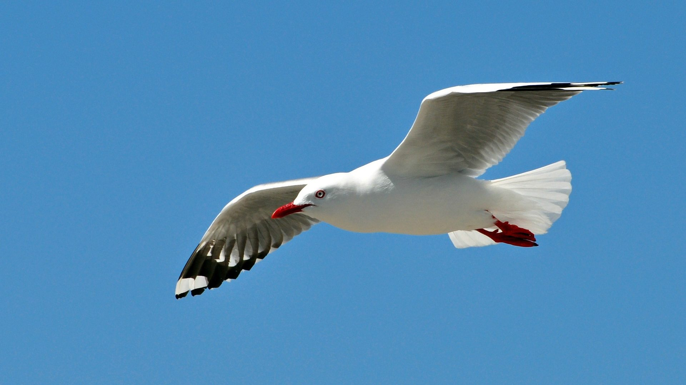

Welome to this page!
This beautiful bird is a seagull. Did you know that approximately 1,000,000 seabirds are killed by plastic every year?
Most people think of birds as flying animals that live on land or in trees. However, there are birds who can't fly, but can swim as well as fish! There are birds that soar above water, thousands of miles from any land. There are even birds that sleep on the sea, and drink seawater. These are all seabirds.
No birds actually live at sea all the time. Though there are birds that spend a great deal of time in the water. And there are other birds that spend most of their time above water.
These birds are as much part of the sea life as sharks or a hawksbill turtle.
Sea birds, like all birds, lay eggs with hard shells. Such eggs must be laid on land. So at times, maybe once every year or two, all sea birds go to land to mate and lay their eggs. But for many, this is the only time they ever visit the land.
Bits of plastic debris litter the shore: bottle caps, toys, cigarette lighters, fishing line and other garbage. Scientists are now documenting how this surge of plastic trash leaves a wake of death and disease that directly affects seabirds.
